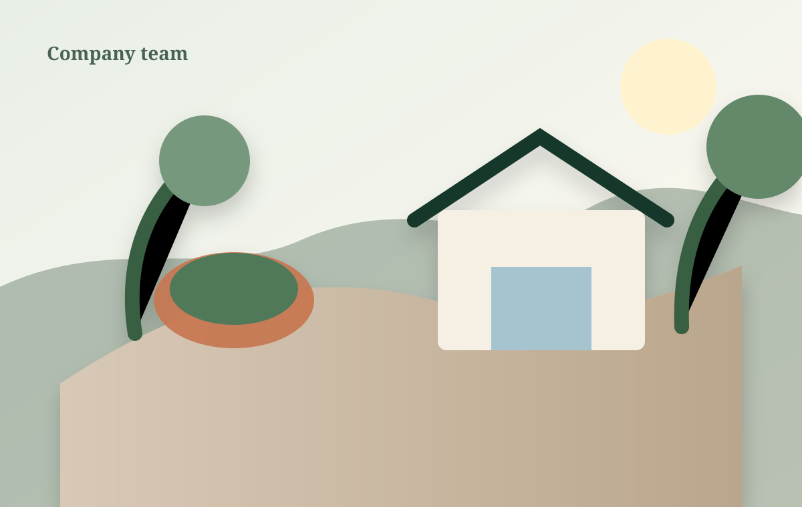

Mara Ellison
Principal DesignerFocuses on residential master plans, planting composition, and material integration.
Alder & Stone brings design thinking and field craft together, so ideas remain beautiful after they meet grading, weather, roots, and real life.

They connect naturally to the architecture. Paths land where people walk. Plant communities suit the light and soil. Water moves deliberately. Materials weather with character.
We founded Alder & Stone to create those spaces through one integrated studio—designers, horticulturists, masons, carpenters, and project leaders working from the same intent.
Our leaders collaborate from concept sketches through the last planting and final lighting adjustment.
Focuses on residential master plans, planting composition, and material integration.
Leads hardscape, grading, carpentry, and field systems with 17 years of experience.
Builds resilient planting palettes around seasonal interest, ecology, and realistic maintenance.
Sun, soil, water, grade, architecture, and views should shape every decision.
Beauty matters, but so do circulation, comfort, storage, maintenance, and use.
Base preparation, drainage, joinery, plant handling, and finish work determine longevity.
Growth only matters when quality, communication, and support grow with it.
Sun, grade, architecture, views, and daily routines give us the foundation for a landscape that belongs.